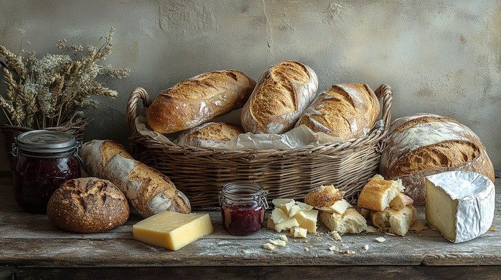
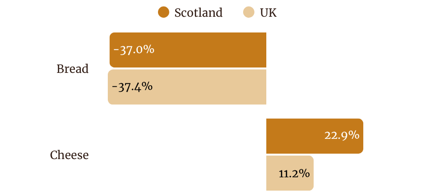

Money · Food
Britain’s basket has changed. Scotland’s has changed faster.
Scots now buy over a third less bread than twenty years ago, and nearly a quarter more cheese. Here is what the figures show.

By Manon Farget· Published 27th Nov 2026
In 2005-06, bread was still at the centre of the Scottish shopping basket. By 2024-25, Scots were buying 37.0% less of it per person each week, almost the same fall as in the UK, down 37.4%.
Over the same period, they were buying 22.9% more cheese, against 11.2% in the UK.
That swap sums up the story. Less bread, more cheese. And for some foods, Scotland has moved further than the UK.
Figure 1 shows that swap in one image. Bread falls the same in Scotland and in the UK. Cheese rises twice as fast in Scotland.
The swap. Less bread, more cheese.
Scotland vs UK, 2005-06 to 2024-25.

What have Scots stopped buying, what have they started buying instead, and how does Scotland compare with the rest of the UK. That is the question this article answers.
What Scots buy less of
Figure 2 shows the biggest rises and falls in what Scots buy, from 2005-06 to 2024-25.
How to read it. Each food has two bars, side by side. The dark bar is Scotland. The light bar is the UK. The longer the bar, the bigger the change. Hover over, or tap, a bar for the figures.
Use the controls to change the period or to show only rises or only falls.
Biggest rises and falls in what Scots buy
Click a bar to see the quantities behind it.
Where Scotland differs
Bread is a UK-wide change. Down 37.0% in Scotland, down 37.4% in the UK. The gap is only 0.5 points.
Cheese is different. Up 22.9% in Scotland, up 11.2% in the UK. The gap is 11.7 points.
The biggest gap is for fresh green vegetables. Down 8.4% in Scotland, down 34.5% in the UK. The gap is 26.2 points. Other fresh vegetables are up 10.0% in Scotland, down 7.1% in the UK. The gap is 17.0 points.
Fish shows the same pattern in the recent period. Since 2019-20, fish is up 15.0% in Scotland, but down 15.9% in the UK. These are the foods where Scotland really differs.
Figure 3 shows where the gap is biggest. Fresh green vegetables lead.
Watch the gap. Green vegetables lead.
Gap Scotland - UK, in points, 2005-06 to 2024-25.
When Scotland and the UK move together, it points to a UK-wide change. When Scotland moves further, or in the opposite direction, it points to something more specific in Scotland.
What these figures do not show is just as important. It shows quantities bought, not nutrients eaten, and not food wasted.
What may explain it
Three forces may explain much of the change, and they overlap.
First, price. Food prices rose sharply in 2022 and 2023. When prices rise, households buy less of what feels expensive or perishable, and more of what keeps or stretches across several meals.
Second, COVID. In 2020-21, eating out collapsed and home cooking rose. The recent period, 2019-20 to 2024-25, helps separate the long trend from the COVID shock.
Third, habits. Cheese fits convenience cooking easily. It keeps, and it works in pasta, pizza, baked potatoes, and snacks. Bread, in its traditional sliced-loaf form, fits it less well.
None of this proves a single cause. The data suggest a pattern. They do not prove why each household changed its basket.
Conclusion
Scots have bought much less bread, down 37.0%, almost the same as the UK, and much more cheese, up 22.9% in Scotland against 11.2% in the UK. The basket is less centred on the daily loaf, and more centred on versatile foods that fit how people cook now.
What to buy next, if you shop in Scotland. Buy less bread, but buy better bread. Buy cheese from a Scottish producer when you can, compare price per kilo, and use it across several meals.
The open question is what comes next. Will bread keep falling, or has it found its new level. The next Family Food release will tell us.